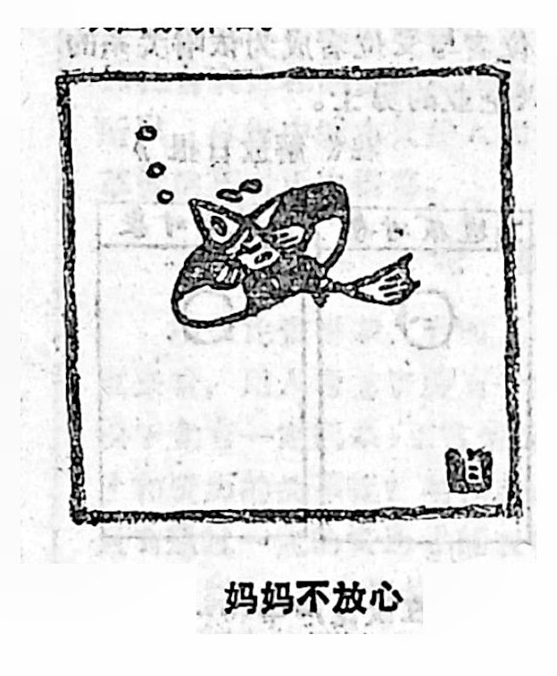

佚名 《人事》1986年第2期（总第5期），第27页
妈妈不放心
Mother Can't Stop Worrying
- Description
- A small fish swims with a life ring around its body.
- Note
- 妈妈不放心: “Mother can't stop worrying,” so worried that even a fish is sent out in a life preserver. A jab at over-protective parents. How it bears on personnel work is not stated; it sits among clippings about returned overseas scholars.
- Artist
- Unattributed 佚名
- Published in
- 《人事》1986年第2期（总第5期）, p. 27
- Themes
- Everyday life (not about personnel work)

Cite
Unattributed, “妈妈不放心” [Mother Can't Stop Worrying], Renshi (Personnel) 《人事》, 1986, no. 2, p. 27.